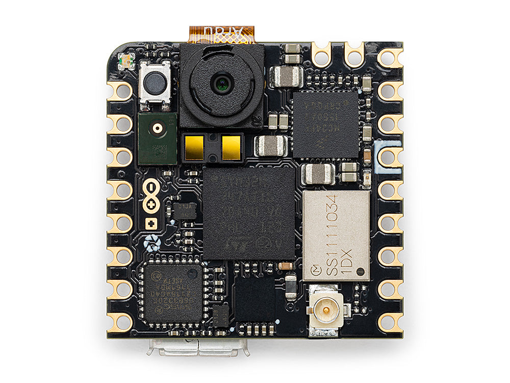
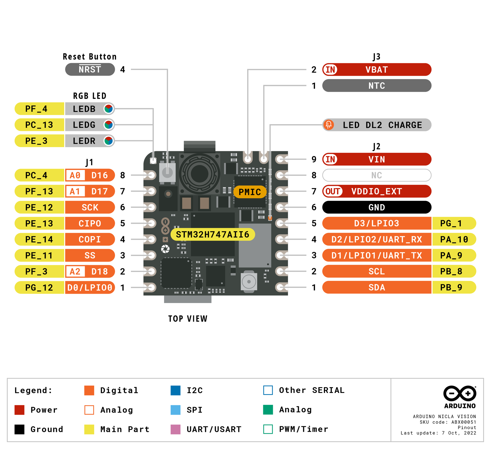

Arduino Nicla Vision¶
Arduino Nicla Vision je ploča za strojni vid dimenzija 22,86 × 22,86 mm izgrađena oko STMicroelectronics STM32H747AII6 — dvojezgrenog SoC-a koji kombinira Cortex‑M7 na 400 MHz s Cortex‑M4 na 200 MHz. OpenMV ugrađeni program (firmware) izvodi se u cijelosti na M7 jezgri. Ploča uparuje MCU s GC2145 2 MP CMOS senzorom u boji, LSM6DSOX 6‑osnim IMU-om, MP34DT06 MEMS mikrofonom, VL53L1CB mjeračem udaljenosti na principu vremena leta (time‑of‑flight), Wi‑Fi + Bluetooth LE 5.1, te punjačem baterije / mjeračem napunjenosti.
{kind=link}

Za potpunu tehničku dokumentaciju, fotografije i dimenzije pogledajte stranicu proizvoda Arduino Nicla Vision.
Istaknute značajke¶
STMicroelectronics STM32H747AII6 dvojni Cortex‑M7 (400 MHz) + Cortex‑M4 (200 MHz). OpenMV ugrađeni program (firmware) izvodi se samo na M7 jezgri.
2 MB interne flash memorije plus 16 MB vanjske QSPI flash memorije (koristi se za aplikaciju + ROMFS).
1 MB interne SRAM memorije.
Hardverski JPEG koder/dekoder.
GC2145 2 MP CMOS senzor u boji.
Ugrađeni IMU (LSM6DSOX akcelerometar + žiroskop), MEMS mikrofon (MP34DT06JTR) i VL53L1CB mjerač udaljenosti na principu vremena leta (do ~4 m).
Wi‑Fi b/g/n (2,4 GHz) + Bluetooth LE 5.1 putem Murata 1DX (CYW4343W) modula — povezuje se na priloženu antenu preko ugrađenog U.FL konektora.
Brzi USB (480 Mb/s) preko Micro USB-a kroz vanjski ULPI PHY (USB3320C).
13 korisničkih I/O pinova na Arduino rubnim priključcima — četiri digitalna LPIO-a (
D0–D3), tri 1,8 V analogna ulaza (A0–A2), parSCL/SDAza I²C i četvorkaSCLK/CIPO/COPI/CSza SPI.Podrška za bateriju — Li‑Po konektor na poleđini, punjač BQ tipa i MAX17262 mjerač napunjenosti preko interne PMIC sabirnice.
5‑pinski ESLOV konektor na poleđini za I²C proširenje bez lemljenja.
Upozorenje
Korisnički digitalni pinovi su 3,3 V po zadanom, ali su provedeni kroz softverski programabilne pretvarače razine (VDDIO_EXT) koji se mogu rekonfigurirati na 1,8 V. Analogni pinovi (A0–A2) su isključivo 1,8 V — oni zaobilaze pretvarače razine i spajaju se izravno na MCU. Dovođenje 3,3 V na A0–A2 oštetit će SoC.
Raspored pinova¶
{kind=link}

Referenca pinova¶
Trinaest korisničkih pinova izloženo je na Arduino rubnim priključcima (J1 i J2). Dodatni signali za otklanjanje pogrešaka, oporavak i PMIC provedeni su na ispitne kontaktne točke na poleđini ploče.
Naziv pina |
Referenca |
Funkcija |
|---|---|---|
D0 |
3,3 V |
GPIO / LPIO0 (J1‑1) |
D1 |
3,3 V |
LPUART1 TX / TIM1 CH2 / LPIO1 (J2‑3) |
D2 |
3,3 V |
LPUART1 RX / TIM1 CH3 / LPIO2 (J2‑4) |
D3 |
3,3 V |
GPIO / LPIO3 (J2‑5) |
A0 |
1,8 V |
ADC1 kanal 4 (J1‑8) |
A1 |
1,8 V |
ADC2 kanal 2 (J1‑7) |
A2 |
1,8 V |
ADC3 kanal 5 (J1‑2) |
SCL |
3,3 V |
I2C1 SCL / UART4 RX / TIM4 CH3 (J2‑2) |
SDA |
3,3 V |
I2C1 SDA / UART4 TX / TIM4 CH4 (J2‑1) |
SCLK |
3,3 V |
SPI4 SCK / TIM1 CH3N (J1‑6) |
CIPO |
3,3 V |
SPI4 MISO / TIM1 CH3 (J1‑5) |
COPI |
3,3 V |
SPI4 MOSI / TIM1 CH4 (J1‑4) |
CS |
3,3 V |
SPI4 NSS / TIM1 CH2 (J1‑3) |
RESET |
3,3 V |
spojite na GND (ili pritisnite prekidač na ploči) za resetiranje ploče |
LED_RED |
3,3 V |
crveni kanal RGB LED diode (aktivan u niskom stanju) |
LED_GREEN |
3,3 V |
zeleni kanal RGB LED diode (aktivan u niskom stanju) |
LED_BLUE |
3,3 V |
plavi kanal RGB LED diode (aktivan u niskom stanju) |
Napomena
D0–D3 i SCLK/CIPO/COPI/CS smješteni su iza dvosmjernog pretvarača razine TXB0108 — taj dio podržava samo push‑pull GPIO pogon, pa promet na sabirnici s otvorenim odvodom (npr. softverski emulirani 1‑Wire ili I²C na tim pinovima) neće raditi.
SCL/SDA smješteni su iza zasebnog pretvarača NTS0304 koji podržava i push‑pull i open‑drain pogon, zbog čega I²C 1 ondje radi.
Oba pretvarača referencirana su na VDDIO_EXT (po zadanom 3,3 V iz PMIC-a na ploči), a njihova jakost pogona ograničena je u usporedbi s izravnim GPIO-om — projektirani su za signalne, a ne za naponske terete.
Naponski pinovi¶
Pinovi rubnih priključaka:
VIN (J2‑9) — glavna sustavna napajalna linija 3,6 – 5 V. PMIC ovdje uzima svoj ulaz.
VDDIO_EXT (J2‑7) — izlaz linije pretvarača razine, 1,8 V ili 3,3 V (po zadanom 3,3 V). Koristite ga za napajanje vanjskih 1,8 V ili 3,3 V periferija spojenih na LPIO/SPI/I²C pinove kako bi govorile istom logičkom razinom kao i priključci.
VBAT (J3‑2) — ulaz Li‑Po baterije. PMIC na ploči puni ćeliju iz VIN-a i izvještava o stanju napunjenosti preko mjerača napunjenosti.
NTC (J3‑1) — opcionalni ulaz za Li‑Po termistor.
GND (J2‑6) — zajednička masa.
NC (J2‑8) — nije spojeno.
Ispitne kontaktne točke na poleđini ploče:
+3V3 — glavna linija 3,3 V.
D_P / D_N — USB par podataka velike brzine (nakon PHY-ja).
USB i ESLOV konektor oba napajaju VIN kroz par LM66100 idealnih dioda (po jedna za svaki izvor), tako da bilo koji izvor može sam napajati ploču, a ta dva nikada ne napajaju jedan drugoga unatrag. Ako VIN pogonite izvana na J2‑9, to ima prednost — diode jednostavno prestaju voditi iz USB-a / ESLOV-a čim vanjska linija poraste više.
Ploča se stoga može napajati kroz bilo koji od ovih putova:
Micro USB — 5 V u VIN kroz idealnu diodu na USB strani.
ESLOV konektor — do 5 V na
VESLOVpinu J5, provedeno u VIN kroz idealnu diodu na ESLOV strani (vidi ESLOV konektor).VIN pin (J2‑9) — dovedite izravno regulirano napajanje 3,6 – 5 V.
Li‑Po baterija — spojite na J4 konektor baterije na poleđini ili na VBAT/GND/NTC kontaktne točke na J3 / J2‑6. Ne spajajte dvije baterije istovremeno.
ESLOV konektor¶
J5 na poleđini ploče je 5‑pinski Molex ESLOV konektor bez lemljenja:
Pin |
Naziv |
Funkcija |
|---|---|---|
J5‑1 |
VESLOV |
naponski ulaz (≤ 5 V) — sjedinjen s |
J5‑2 |
INT |
ulaz za vanjski prekid na |
J5‑3 |
SCL_EXT |
dijeljeno s J2 |
J5‑4 |
SDA_EXT |
dijeljeno s J2 |
J5‑5 |
GND |
zajednička masa |
ESLOV-ovi SCL_EXT/SDA_EXT i J2-ovi SCL/SDA su isti pinovi — jedna I²C 1 sabirnica izložena na dva konektora.
Savjet
Koristite procjenitelj trajanja baterije za modeliranje koliko će dugo Nicla Vision raditi na bateriji za zadani omjer aktivnog rada i dubokog sna.
Pinovi za oporavak i otklanjanje pogrešaka¶
RESET — istovremeno trenutni prekidač na vrhu ploče i kontaktna točka (J3‑4 / ispitna točka P5) spojena na SoC-ovu NRST liniju. Spojite na GND za resetiranje.
Nicla Vision koristi Arduinov standardni dvostruki dodir reset za ulazak u Arduinov pokretač (bootloader) — brzo dvaput pritisnite reset gumb i ploča se prijavljuje kao DFU uređaj. OpenMV IDE koristi taj način za ponovno upisivanje ugrađenog programa (firmware).
STM32 SWD signali izloženi su na poleđini ploče kroz red ispitnih kontaktnih točaka između dva J2 priključka. Zalemite 2,54 mm (100‑mil) priključak u njih kako biste spojili ST‑LINK ili J‑Link adapter:
P1 / P2 — interna PMIC I²C sabirnica na PF0 (SDA) i PF1 (SCL). To je
machine.I2C(2)na Nicla Visionu i nosi promet PMIC-a, mjerača napunjenosti i ToF-a.P3 — TMS / SWDIO (PA13)
P4 — TCK / SWCLK (PA14)
P5 — NRST
P6 — TDO / SWO (PB3)
P7 — +1V8 linija (SoC-ovo I/O napajanje — također i ispravna referenca za debug adapter).
P8 —
VOTP_PMIC— samo za tvorničko programiranje. Mora ostati nespojeno.
Svi debug signali su referencirani na 1,8 V — STM32H747-ov I/O prsten na ovoj ploči napaja se iz +1V8 linije. Postavite svoj debug adapter na 1,8 V logiku prije spajanja.
Periferije na ploči¶
LED diode¶
Nicla Vision ima jednu korisničku RGB LED diodu, softverski upravljivu putem machine.LED
from machine import LED
LED("LED_RED").on()
LED("LED_GREEN").on()
LED("LED_BLUE").on()
Zasebna DL2 CHARGE LED dioda na boku ploče izravno je ožičena na PMIC-ov CHGB izlaz — svijetli dok se Li‑Po baterija puni iz USB-a / ESLOV-a / VIN-a i nije korisnički upravljiva.
Senzor kamere¶
GC2145 se pogoni kroz modul csi — senzori kamere
import csi
cam = csi.CSI()
cam.reset()
cam.pixformat(csi.RGB565)
cam.framesize(csi.QVGA)
cam.snapshot(time=2000) # let auto‑exposure settle
while True:
img = cam.snapshot()
Kada zatražite malu veličinu sličice, GC2145 upravljački program izrezuje proporcionalno mali prozor očitavanja iz senzora — po zadanom je omjer smanjenja od očitavanja do izlaza ograničen na 3x kako bi se održala brzina sličica. csi.IOCTL_SET_FOV_WIDE podiže to ograničenje na 5x, što znači da upravljački program povlači iz šireg područja senzora pri strujanju malih razlučivosti. Rezultat je primjetno šire vidno polje pri malim veličinama sličice, uz cijenu nešto smanjene propusnosti:
cam.ioctl(csi.IOCTL_SET_FOV_WIDE, True)
cam.ioctl(csi.IOCTL_GET_FOV_WIDE) # returns the current setting
M4 jezgra¶
Cortex‑M4 jezgra izložena je kroz openamp za međuprocesorsku komunikaciju. OpenMV ugrađeni program (firmware) izvodi se samo na M7-u; M4 nema vlastiti MicroPython runtime, pa njegova upotreba znači izgradnju zasebne C firmware slike i njezino učitavanje iz datotečnog sustava putem openamp.RemoteProc. Unaprijed izgrađeni primjer firmwarea koji implementira virtualnu UART krajnju točku dostupan je u repozitoriju openamp_vuart — slijedite njegov README za izgradnju vuart.elf
import openamp
import time
def ept_recv_callback(src_addr, data):
print("Received:", data.decode())
ept = openamp.Endpoint("vuart-channel", callback=ept_recv_callback)
rproc = openamp.RemoteProc("vuart.elf")
rproc.start()
count = 0
while True:
if ept.is_ready():
ept.send("Hello World %d!" % count, timeout=1000)
count += 1
time.sleep_ms(1000)
U praksi ovu podršku najbolje je tretirati kao demonstraciju openamp sučelja, a ne kao funkcionalnu dvojezgrenu platformu — M4 se ne može resetirati neovisno o M7-u, pa zaustavljanje M4-a prisiljava potpuno ponovno pokretanje sustava.
Mikrofon¶
MP34DT06JTR PDM mikrofon na ploči snima se kroz audio — Audio modul preko STM32-ove DFSDM periferije. Svaki međuspremnik stiže kao 16‑bitni PCM bytearray s predznakom, spreman za predaju u ulab/numpy za DSP — na primjer, jednostavan detektor glasnoće:
import audio
from ulab import numpy as np
def loudness(pcmbuf):
samples = np.array(np.frombuffer(pcmbuf, dtype=np.int16), dtype=np.float)
rms = np.sqrt(np.mean(samples ** 2))
if rms > 10000:
print("Loud!", int(rms))
audio.init(channels=1, frequency=16000, gain_db=24)
audio.start_streaming(loudness)
while True:
pass
IMU¶
LSM6DSOX akcelerometar + žiroskop na ploči izloženi su kroz imu — imu senzor
import imu
import time
while True:
print(imu.acceleration_mg()) # (x, y, z) in milli‑g
print(imu.angular_rate_mdps()) # (x, y, z) in milli‑deg/s
time.sleep_ms(100)
IMU je ožičen na namjensku internu SPI sabirnicu (SPI5) tako da se ne natječe s korisničkim SPI4 izvedenim na priključke.
Mjerač udaljenosti na principu vremena leta¶
ST VL53L1CB mjerač udaljenosti na principu vremena leta na ploči nalazi se na internoj PMIC I²C sabirnici (I²C 2). Koristite zamrznuti vl53l1x — VL53L1X ToF upravljački program za senzor udaljenosti upravljački program za očitanja udaljenosti do ~4 m:
import time
from machine import I2C
import vl53l1x
bus = I2C(2) # internal bus (PMIC / fuel gauge / ToF)
tof = vl53l1x.VL53L1X(bus)
while True:
print("Distance:", tof.read(), "mm")
time.sleep_ms(100)
Mjerač napunjenosti baterije¶
Maxim MAX17262 ModelGauge m5 mjerač napunjenosti prati napon, struju, temperaturu i stanje napunjenosti Li‑Po baterije. Nalazi se na I²C 2 na adresi 0x36.
MAX17262 ima interno mjerenje struje, pa registar struje izravno očitava u mikroamperima bez vanjskog Rsense faktora koji bi trebalo primijeniti. Očitavanje mjerača napunjenosti je bezopasno — ne isporučuje se upravljački program, ali se registri dokumentirani u MAX17262 tehničkoj dokumentaciji mogu izravno očitati:
import time
import struct
from machine import I2C
FUEL_GAUGE = 0x36 # MAX17262
def read_reg(bus, addr, reg):
return struct.unpack("<H", bus.readfrom_mem(addr, reg, 2))[0]
def read_signed(bus, addr, reg):
v = read_reg(bus, addr, reg)
return v - 0x10000 if v & 0x8000 else v
bus = I2C(2)
while True:
# 0x05 RepCap — remaining capacity, raw × 0.5 mAh
rep_cap = read_reg(bus, FUEL_GAUGE, 0x05) * 0.5
# 0x06 RepSOC — state of charge, raw / 256 %
soc = read_reg(bus, FUEL_GAUGE, 0x06) / 256
# 0x08 Temp — die temperature, signed, raw / 256 °C
temp = read_signed(bus, FUEL_GAUGE, 0x08) / 256
# 0x09 VCell — battery voltage, raw × 78.125 µV
vcell = read_reg(bus, FUEL_GAUGE, 0x09) * 78.125 / 1_000_000
# 0x0A Current — signed, raw × 156.25 µA
current = read_signed(bus, FUEL_GAUGE, 0x0A) * 156.25 / 1000
# 0x0B AvgCurrent — averaged current
avg_curr = read_signed(bus, FUEL_GAUGE, 0x0B) * 156.25 / 1000
# 0x10 FullCapRep — learned full capacity, raw × 0.5 mAh
full_cap = read_reg(bus, FUEL_GAUGE, 0x10) * 0.5
# 0x11 TTE — time-to-empty (valid while discharging), raw × 5.625 s
tte_s = read_reg(bus, FUEL_GAUGE, 0x11) * 5.625
# 0x20 TTF — time-to-full (valid while charging), raw × 5.625 s
ttf_s = read_reg(bus, FUEL_GAUGE, 0x20) * 5.625
# 0x17 Cycles — charge-cycle counter, 1% per LSB
cycles = read_reg(bus, FUEL_GAUGE, 0x17) / 100
print("V: %.3f V" % vcell)
print("Capacity: %.1f / %.1f mAh (%.1f %%)" % (rep_cap, full_cap, soc))
print("Temp: %.1f C" % temp)
print("Current: %.1f mA (avg %.1f mA)" % (current, avg_curr))
print("TTE: %.0f s TTF: %.0f s" % (tte_s, ttf_s))
print("Cycles: %.2f" % cycles)
print()
time.sleep_ms(1000)
Current je dvostruki komplement s predznakom: pozitivan tijekom punjenja, negativan tijekom pražnjenja. TTE je smislen samo kada je struja negativna; TTF samo kada je struja pozitivna.
Integrirani sklop za upravljanje napajanjem¶
NXP MC34PF1550A0EP PMIC upravlja svakim regulatorom na Nicla Visionu — glavnom +3V3 linijom, +1V8 linijom za SoC jezgru / I/O, VDDIO_EXT prema pretvaračima razine i Li‑Po punjačem. Nalazi se na I²C 2 na adresi 0x08.
Upozorenje
Očitavanje PMIC registara je u redu; pisanje u njih je opasno. Pogrešna konfiguracija buck regulatora ili postavke punjača može trajno oštetiti ploču, bateriju ili oboje. Tretirajte PMIC kao samo za čitanje osim ako točno znate što radite.
Najkorisnija stvar koju vam PMIC govori, a mjerač napunjenosti ne može, jest stroj stanja punjača — radi li ploča trenutno na USB-u / ESLOV-u / VIN-u, u kojem je stadiju ciklusa punjenja Li‑Po, i je li punjač u toplinskoj ili watchdog grešci. Registri punjača nalaze se na pomaku od 0x80 u glavnom I²C adresnom prostoru PF1550 (vidi §22.2 PF1550 tehničke dokumentacije), pa se primjerice CHG_INT_OK na adresi punjača 0x04 čita iz PMIC registra 0x84
import time
from machine import I2C
PMIC = 0x08
# Charger state machine (low nibble of CHG_SNS, register 0x87)
CHG_STATES = {
0x0: "precharge",
0x1: "fast charge (constant current)",
0x2: "fast charge (constant voltage)",
0x3: "end of charge",
0x4: "done",
0x6: "timer fault",
0x7: "thermistor suspend",
0x8: "off — input invalid or charger disabled",
0x9: "battery overvoltage",
0xA: "thermal shutdown",
0xC: "linear mode (not charging)",
}
bus = I2C(2)
while True:
# 0x84 CHG_INT_OK — single-bit indicators
ok = bus.readfrom_mem(PMIC, 0x84, 1)[0]
vbus_ok = bool(ok & (1 << 5)) # bit 5 — VBUS valid (USB/ESLOV/VIN)
bat_ok = bool(ok & (1 << 2)) # bit 2 — battery OK
chg_ok = bool(ok & (1 << 3)) # bit 3 — charger actively charging
thm_ok = bool(ok & (1 << 7)) # bit 7 — thermistor in normal range
# 0x87 CHG_SNS — charger state + thermal regulation flag
chg_sns = bus.readfrom_mem(PMIC, 0x87, 1)[0]
state = CHG_STATES.get(chg_sns & 0x0F, "reserved")
treg = bool(chg_sns & (1 << 7)) # thermal regulation active
print("VBUS valid: ", vbus_ok)
print("battery OK: ", bat_ok)
print("charger active: ", chg_ok)
print("thermistor normal: ", thm_ok)
print("thermal reg active: ", treg)
print("state: ", state)
print()
time.sleep_ms(1000)
Drugi registri samo za čitanje koje vrijedi pogledati u tehničkoj dokumentaciji (svi na pomaku punjača 0x80): 0x80 CHG_INT (zaglavljeni prekidi punjača — zastavice grešaka), 0x86 VBUS_SNS (višebitno stanje VBUS-a uključujući OVLO / UVLO / DPM) i 0x88 BATT_SNS (prisutnost baterije i stanje prekomjerne struje).
Wi‑Fi¶
Murata 1DX (CYW4343W) na ploči izložen je putem network — konfiguracija mreže kao stanično sučelje. Spojite priloženu antenu na U.FL konektor na ploči prije nego pokrenete radio:
import network, time
wlan = network.WLAN(network.STA_IF)
wlan.active(True)
wlan.connect("ssid", "password")
while not wlan.isconnected():
time.sleep(1)
print("Wi‑Fi IP:", wlan.ipconfig("addr4")[0])
Bluetooth¶
Isti Murata 1DX također izlaže Bluetooth LE 5.1. Koristite aioble — Asinkroni BLE za BLE prilagođen asynciju — na primjer, oglašavajte se kao periferija i čekajte da se centralna jedinica spoji:
import asyncio
import aioble
async def run():
while True:
conn = await aioble.advertise(250_000, name="Nicla-Vision")
print("Connected:", conn.device)
await conn.disconnected()
asyncio.run(run())
Referenca sabirnica¶
GPIO¶
Koristite machine.Pin za čitanje ili pogon bilo kojeg od pinova označenih sitotiskom. Izlazi su 3,3 V CMOS (po zadanom VDDIO_EXT), a pretvarači razine ograničavaju jakost pogona po pinu na nekoliko miliampera — projektirani su za signalne, a ne za naponske terete.
from machine import Pin
out = Pin("D0", Pin.OUT)
out.on()
out.off()
out.value(1)
inp = Pin("D1", Pin.IN, Pin.PULL_UP)
print(inp.value())
Svaki ulazni pin također može pokrenuti prekid pri prijelazu ruba:
def handler(pin):
print("triggered:", pin)
Pin("D1", Pin.IN, Pin.PULL_UP).irq(
handler, Pin.IRQ_FALLING | Pin.IRQ_RISING,
)
UART¶
Sabirnica |
TX |
RX |
|---|---|---|
UART4 |
SDA |
SCL |
from machine import UART
uart = UART(4, baudrate=115200)
uart.write("hello")
uart.read(5)
Napomena
UART4 dijeli svoje pinove s I²C 1 — iste SDA/SCL kontaktne točke nose obje sabirnice. Na tim pinovima odaberite UART ili I²C, ne oboje.
Sitotisak D1/D2 također glasi UART_TX/UART_RX, ali u ovom firmwareu ti su pinovi provedeni na LPUART1, a ne na machine.UART. Sam machine.UART(1) rezerviran je za Bluetooth kontroler na čipu i nije dostupan na priključcima.
I²C¶
Sabirnica |
SCL |
SDA |
|---|---|---|
I2C1 |
SCL |
SDA |
from machine import I2C
i2c = I2C(1, freq=400_000)
i2c.scan()
i2c.writeto(0x76, b"hi")
SCL/SDA kontaktne točke na J2 i ESLOV konektorovi SCL_EXT/SDA_EXT pinovi smještaju se na istu I²C 1 sabirnicu — vidi ESLOV konektor iznad za ESLOV raspored pinova.
Isti se hardver također može koristiti u target (slave) načinu kroz machine.I2CTarget za izlaganje memorijskog područja drugom I²C kontroleru:
from machine import I2CTarget
buf = bytearray(32)
target = I2CTarget(1, addr=0x42, mem=buf)
SPI¶
Sabirnica |
MOSI |
MISO |
SCK |
CS |
|---|---|---|---|---|
SPI4 |
COPI |
CIPO |
SCLK |
CS |
from machine import SPI
from machine import Pin
spi = SPI(4, baudrate=10_000_000)
cs = Pin("CS", Pin.OUT, value=1) # CS is not driven by the SPI peripheral
cs.value(0)
spi.write(b"hello")
cs.value(1)
ADC¶
Nicla Vision izlaže tri 12‑bitna ADC kanala na A0, A1 i A2. Sva tri su referencirana na 1,8 V — read_u16 vraća 0–65535 u rasponu 0–1,8 V na pinu:
from machine import ADC
import time
adc = ADC("A0")
while True:
voltage = adc.read_u16() * 1.8 / 65535
print(voltage)
time.sleep_ms(100)
Upozorenje
ADC ulazi Nicla Visiona referencirani su na 1,8 V (i nemaju pretvarač razine ispred SoC-a). Dovođenje signala od 3,3 V zasitit će pretvarač i može oštetiti pin — više napone podijelite vanjski.
PWM¶
Pin |
Mjerač vremena / kanal |
|---|---|
D1 |
TIM1 CH2 |
D2 |
TIM1 CH3 |
SCL |
TIM4 CH3, TIM16 CH1 |
SDA |
TIM4 CH4, TIM17 CH1 |
SCLK |
TIM1 CH3N |
CIPO |
TIM1 CH3 |
COPI |
TIM1 CH4 |
CS |
TIM1 CH2 |
Pogonite bilo koji od njih putem machine.PWM
from machine import Pin, PWM
pwm = PWM(Pin("D1"), freq=1_000, duty_u16=32768)
Napomena
Nekoliko pinova dijeli TIM1 kanale:
TIM1 CH2 je na
D1iCS.TIM1 CH3 je na
D2iCIPO;SCLKizlazi invertirani komplement (TIM1 CH3N) istog kanala.TIM1 CH4 je samo na
COPI.
Odaberite jednog potrošača po kanalu mjerača vremena. SPI četvorka pinova (SCLK/CIPO/COPI/CS) također se ne može PWM-pogoniti dok ih machine.SPI(4) koristi.
Softverski emulirane sabirnice¶
machine.SoftI2C i machine.SoftSPI rade na bilo kojem GPIO-u ako vam treba dodatna sabirnica.
Toplinski senzor (izvan ploče)¶
Firmware uključuje fir — upravljački program termalnog senzora (fir == daleko infracrveno) upravljački program za vanjski ožičene toplinske snimače:
MLX90621 — 16 × 4 IR polje
MLX90640 — 32 × 24 IR polje
MLX90641 — 16 × 12 IR polje
AMG8833 — 8 × 8 IR polje
Ožičite modul na I²C sabirnicu ploče i čitajte sličice s fir.init() + fir.snapshot()
import time
import image
import fir
fir.init() # auto‑detects the sensor
clock = time.clock()
while True:
clock.tick()
try:
img = fir.snapshot(x_scale=5, y_scale=5,
color_palette=image.PALETTE_IRONBOW,
hint=image.BICUBIC,
copy_to_fb=True)
except OSError:
continue
print(clock.fps())
fir upravljački program razgovara sa senzorom samo preko I²C 1 — ožičite modul na sitotiskom označene SCL / SDA kontaktne točke.
Vremensko usklađivanje¶
time¶
Modul time pokriva blokirajuća kašnjenja, monotone otkucaje i mjerenje proteklog vremena:
import time
time.sleep(1) # seconds
time.sleep_ms(500)
time.sleep_us(10)
start = time.ticks_ms()
# ...do work...
elapsed = time.ticks_diff(time.ticks_ms(), start)
Virtualni mjerači vremena¶
machine.Timer raspoređuje periodične ili jednokratne povratne pozive bez trošenja hardverskog mjesta mjerača vremena. Proslijedite -1 kao id za korištenje virtualnog (softverskog) mjerača vremena:
from machine import Timer
one_shot = Timer(-1)
one_shot.init(period=5_000, mode=Timer.ONE_SHOT,
callback=lambda t: print("once"))
periodic = Timer(-1)
periodic.init(period=2_000, mode=Timer.PERIODIC,
callback=lambda t: print("tick"))
Vrijednosti perioda su u milisekundama. Pozovite deinit() za zaustavljanje i otpuštanje mjesta.
Sat stvarnog vremena¶
machine.RTC čuva stvarno vrijeme kroz resetiranja:
from machine import RTC
rtc = RTC()
rtc.datetime((2026, 4, 30, 4, 12, 0, 0, 0)) # Y, M, D, weekday, h, m, s, subsec
print(rtc.datetime())
Watchdog¶
machine.WDT resetira ploču ako se aplikacija zaglavi. Jednom pokrenut, ne može se zaustaviti ni rekonfigurirati — povremeno ga hranite unutar svoje glavne petlje:
from machine import WDT
wdt = WDT(timeout=5_000) # 5 second window
while True:
# ...do work...
wdt.feed()
Informacije o pokretanju i izvođenju¶
Ažuriranje ugrađenog programa (DFU)¶
Nicla Vision koristi Arduinov standardni dvostruki dodir reset za ulazak u Arduinov pokretač (bootloader). Brzo dvaput pritisnite reset gumb — ploča se ponovno prijavljuje preko USB-a kao DFU uređaj i OpenMV IDE može upisati novu firmware sliku.
Skripta koja se izvodi može na zahtjev ponovno ući u pokretač (bootloader) pozivom machine.bootloader()
import machine
machine.bootloader()
Datotečni sustav i redoslijed pokretanja¶
Firmware Nicla Visiona pri pokretanju montira do dva datotečna sustava:
Interna flash memorija — uvijek montirana na
/flash. Po zadanom sadržimain.pyiREADME.txt; stvorena pri prvom pokretanju.ROMFS — datotečni sustav samo za čitanje, mapiran u memoriju, na
/rom, montiran automatski od strane MicroPythona pri pokretanju.
Nakon montiranja, radni direktorij postavlja se na /flash. Interpreter zatim izvodi skripte iz tog direktorija:
boot.pyse izvodi pri svakom mekom resetu (hladno pokretanje,Ctrl‑Diz REPL-a, ili kad god se skripta koja se izvodi vrati).main.pyse izvodi samo pri hladnom pokretanju, neposredno nakonboot.py. Naknadni meki reseti ponovno izvodeboot.pyali odmah prelaze na REPL — za ponovno izvođenjemain.pymorate u potpunosti resetirati ploču.
Zadani main.py isporučen na svježe upisanoj ploči samo treperi plavim kanalom korisničke RGB LED diode kao otkucaj srca (dva kratka impulsa, kratak razmak), tako da možete prepoznati da se firmware uredno pokrenuo bez ikakvog spojenog domaćina.
sys.path je proširen tako da uključuje oba datotečna sustava i njihove lib/ poddirektorije, pa uvozivi moduli mogu boraviti u /flash/lib ili /rom/lib.
Kada je spojen preko USB-a, /flash se također prijavljuje kao USB pogon za masovnu pohranu na domaćinu, omogućujući vam izravno uređivanje boot.py, main.py i bilo kojih drugih datoteka. Izbacite pogon prije resetiranja kamere kako bi domaćin ispraznio svoje keširane zapise.
Napomena
Budući da OS tretira pogon kao pasivni blok-uređaj, datoteke stvorene ili izmijenjene kodom koji se izvodi na kameri neće se pojaviti dok domaćin ponovno ne montira pogon. Ako i OS i kamera istovremeno pišu na isti datotečni sustav, OS će pobijediti i prepisati izmjene koje je napravila kamera. Koristite SD karticu za sve podatke koje skripta zapisuje natrag, te ponovno montirajte prije čitanja tih datoteka s domaćina.
Napomena
Crveni kanal korisničke RGB LED diode može nakratko zasvijetliti dok domaćin čita s USB pogona za masovnu pohranu ili piše na njega — ovo je indikator aktivnosti vođen firmwareom, a ne kvar.
Veličine pohrane¶
Nicla Vision isporučuje se s:
/flash— 11 MB FAT datotečni sustav, čitanje/pisanje./rom— 4 MB ROMFS samo za čitanje, mapiran u memoriju, koristi se za isporuku skripti i ML modela kojima koristi pristup putem mmap bez kopiranja.
Indikator teškog kvara (hard fault)¶
Ako korisnička RGB LED dioda brzo prolazi kroz sve boje — dovoljno brzo da obično izgleda kao treperava bijela LED dioda umjesto zasebnih nijansi — firmware je naišao na nepopravljiv teški kvar (hard fault). Ponovno upišite firmware za oporavak; ako ponovno upisivanje ne pomogne, ploča može biti fizički oštećena.
Softverske biblioteke¶
Pogledajte indeks biblioteke za potpun popis modula — uključujući one koji su jedinstveni za Nicla Vision build.